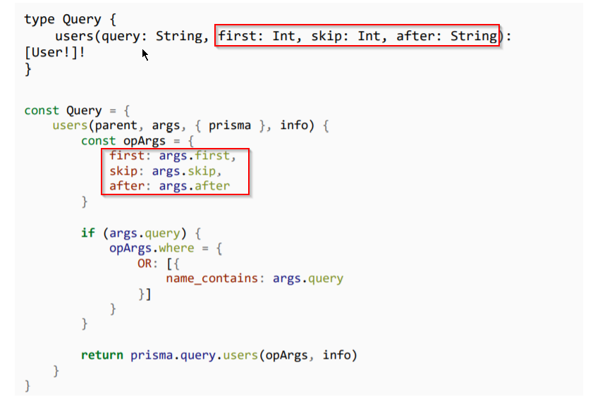

Prisma supports pagaination by default. It supports the following types
skip: Int - skip the no. of documents
after: String - load after a particular string
before: String - load before a particular string, rather upto a string
first: Int - how many posts should be loaded
last: Int -
Ideally pagination can be done by first,skip and after
